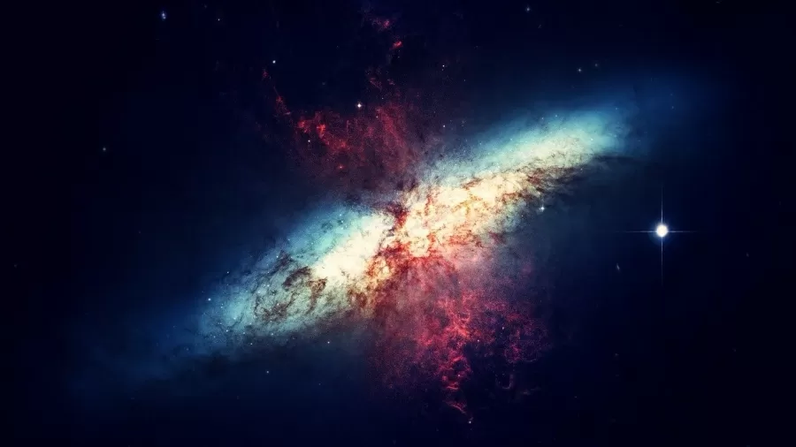

Telescópio James Webb pode ter encontrado galáxia mais antiga já observada
Marcella Duarte
21/07/2022 | 15h36

Em apenas uma semana de trabalho "pra valer", o Telescópio Espacial James Webb pode ter conseguido um recorde: registrar a galáxia mais antiga e distante que se tem conhecimento aqui da Terra.
Trata-se da GLASS-z13, que possui cerca de 13,5 bilhões de anos, remetendo aos primórdios do Universo. Segundo os cientistas, a mancha vermelha (confira a seguir) capturada pelo observatório é um grupo giratório de estrelas, gás e poeira, unidos pela gravidade, que se formou "apenas" 300 milhões de anos após o Big Bang.
Fonte: Tilt UOL.